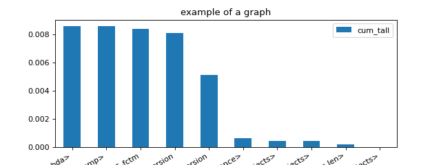

tools#
Benchmark#
- onnx_array_api.ext_test_case.measure_time(stmt: Callable, context: Dict[str, Any] | None = None, repeat: int = 10, number: int = 50, div_by_number: bool = True, max_time: float | None = None) Dict[str, Any][source]#
Measures a statement and returns the results as a dictionary.
- Parameters:
stmt – string
context – variable to know in a dictionary
repeat – average over repeat experiment
number – number of executions in one row
div_by_number – divide by the number of executions
max_time – execute the statement until the total goes beyond this time (approximatively), repeat is ignored, div_by_number must be set to True
- Returns:
dictionary
<<<
from onnx_array_api.ext_test_case import measure_time from math import cos res = measure_time(lambda: cos(0.5)) print(res)
>>>
{'average': 1.0720000000219443e-07, 'deviation': 1.5025312013917328e-08, 'min_exec': 9.999999974752428e-08, 'max_exec': 1.5200000007098423e-07, 'repeat': 10, 'number': 50, 'ttime': 1.0720000000219444e-06, 'context_size': 64}
See Timer.repeat for a better understanding of parameter repeat and number. The function returns a duration corresponding to number times the execution of the main statement.
Changed in version 0.4: Parameter max_time was added.
Examples#
Profiling#
- onnx_array_api.profiling.profile(fct: Callable, sort: str = 'cumulative', rootrem: str | None = None, as_df: bool = False, return_results=False, **kwargs) str[source]#
Profiles the execution of a function.
- Parameters:
fct – function to profile
sort – see sort_stats
rootrem – root to remove in filenames
as_df – return the results as a dataframe and not text
return_results – if True, return results as well (in the first position)
kwargs – additional parameters used to create the profiler
- Returns:
raw results, statistics text dump (or dataframe is as_df is True)
(Source code, png, hires.png, pdf)

{kind=link}
{kind=link}
- onnx_array_api.profiling.profile2graph(ps: Stats, clean_text: Callable | None = None, verbose: bool = False, fLOG: Callable | None = None) ProfileNode[source]#
Converts profiling statistics into a graphs.
- Parameters:
ps – an instance of pstats
clean_text – function to clean function names
verbose – verbosity
fLOG – logging function
- Returns:
an instance of class @see cl ProfileNode
pyinstrument has a nice display to show time spent and call stack at the same time. This function tries to replicate that display based on the results produced by module
cProfile. Here is an example.<<<
import time from onnx_array_api.profiling import profile, profile2graph def fct0(t): time.sleep(t) def fct1(t): time.sleep(t) def fct2(): fct1(0.1) fct1(0.01) def fct3(): fct0(0.2) fct1(0.5) def fct4(): fct2() fct3() ps = profile(fct4)[0] root, nodes = profile2graph(ps, clean_text=lambda x: x.split('/')[-1]) text = root.to_text() print(text)
>>>
fct1 -- 3 3 -- 0.00002 0.61109 -- :11:fct1 (fct1) <built-in method time.sleep> -- 3 3 -- 0.61107 0.61107 -- ~:0:<built-in method time.sleep> (<built-in method time.sleep>) +++ fct4 -- 1 1 -- 0.00001 0.81142 -- :25:fct4 (fct4) fct2 -- 1 1 -- 0.00001 0.11048 -- :15:fct2 (fct2) fct1 -- 2 2 -- 0.00001 0.11048 -- :11:fct1 (fct1) +++ fct3 -- 1 1 -- 0.00001 0.70094 -- :20:fct3 (fct3) fct0 -- 1 1 -- 0.00001 0.20032 -- :7:fct0 (fct0) <built-in method time.sleep> -- 1 1 -- 0.20031 0.20031 -- ~:0:<built-in method time.sleep> (<built-in method time.sleep>) +++ fct1 -- 1 1 -- 0.00001 0.50061 -- :11:fct1 (fct1) +++ <built-in method time.sleep> -- 4 4 -- 0.81137 0.81137 -- ~:0:<built-in method time.sleep> (<built-in method time.sleep>)
- onnx_array_api.profiling.profile2df(ps: Stats, as_df: bool = True, clean_text: bool | None = None, verbose: bool = False, fLOG=None)[source]#
Converts profiling statistics into a Dataframe.
- Parameters:
ps –
an instance of pstats
as_df – returns the results as a dataframe (True) or a list of dictionaries (False)
clean_text – function to clean function names
verbose – verbosity
fLOG – logging function
- Returns:
a DataFrame
import pstats from pyquickhelper.pycode.profiling import profile2df ps = pstats.Stats('bench_ortmodule_nn_gpu6.prof') df = profile2df(pd) print(df)
Unit tests#
- onnx_array_api.ext_test_case.ignore_warnings(warns: List[Warning]) Callable[source]#
Catches warnings. @param warns warnings to ignore
- class onnx_array_api.ext_test_case.ExtTestCase(methodName='runTest')[source]#
- capture(fct: Callable)[source]#
Runs a function and capture standard output and error.
- Parameters:
fct – function to run
- Returns:
result of fct, output, error